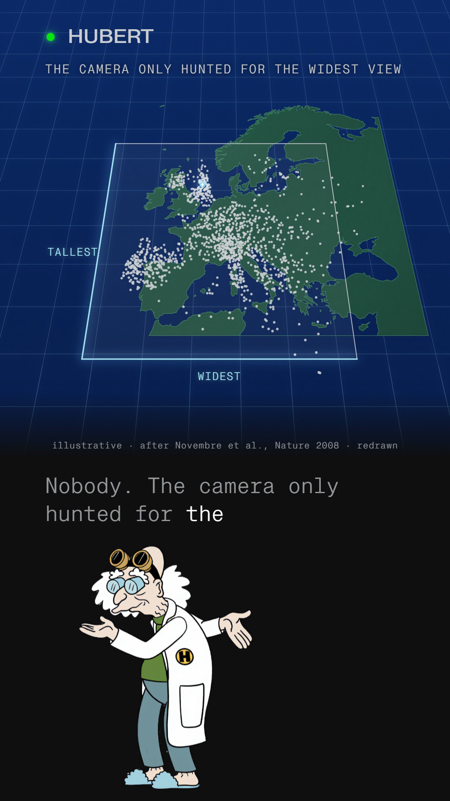

You commented SQUASH — this is the one-page PCA sheet.
Nobody told the computer where anyone lived. It drew a map of Europe anyway.
Every person in a 2008 study is a long list of numbers read from their DNA — about two hundred thousand of them (197,146, to be exact). Two numbers about a person make one dot on a chart; two hundred thousand numbers make one dot in a space with that many directions. Principal component analysis (PCA) photographs that cloud from the angle where the dots are most spread out, which is the view that keeps the biggest differences between people, and throws the rest away. Novembre et al. (Nature, 2008) ran exactly this on 1,387 people sampled across Europe, gave the method no geography at all, and the resulting photo — just two numbers per person — turned out to look like a map of Europe.
Companion to the reel · Watch it on @huberttheinventor

Nº001 · The list
A list of numbers becomes a dot
Say you know a person's height and weight: height goes left to right, weight goes up and down, and that person is one dot on a chart. Give each person two hundred thousand numbers instead of two, and the same rule holds — every number is one more direction, so the chart grows into a space with two hundred thousand directions, and every person is still just one dot, now floating in that huge cloud. Similar lists of numbers sit close together in it. Nobody can picture two hundred thousand directions at once, but the geometry does not care: the dots, and the distances between them, are still well defined.
Nº002 · The squash
The view that keeps the most spread
A photograph of the cloud is flat, so it gives each dot two numbers again: how far left,
how far up. From most camera angles the dots hide behind each other and the photo is a tight, uninformative
bunch — from a random direction in a 197,146-dimensional cloud, the expected spread captured is only
about 1/590th of what the best direction captures (a standard result, not in the paper: for a random unit
direction u, the expected variance is tr(C)/n). So the method carries the camera around the
cloud and stops at the angle that makes it widest; holding that, it tilts to the angle, at right angles to
the first, that makes it tallest. Spread out is what lets you tell people apart, so that view keeps the
biggest differences between the lists and throws the rest away. That is PCA: the first direction is the one
along which people differ most, the second the one that differs most at right angles to it (Wikipedia,
“Principal component analysis”: the first component “maximizes the variance of the
projected data”; the second is “a direction orthogonal to the first… that maximizes the
variance of the projected data”). Nobody told the method where anyone lives; it only ever hunted for
the widest view, run with the smartpca program on the genotype data alone.
a geographical map of Europe arises naturally as an efficient two-dimensional summary of genetic variation in Europeans Novembre, Johnson, Bryc, Kutalik, Boyko, Auton, Indap, King, Bergmann, Nelson, Stephens, Bustamante — Genes Mirror Geography within Europe, Nature 456, 98–101 (2008)
Nº003 · The arithmetic
1,387 people, two numbers each
The study genotyped its 1,387 individuals at 500,568 positions in their DNA (loci) and used 197,146 of those for PCA after quality filtering — the figure this guide rounds to “about two hundred thousand.” The two kept directions (PC1 and PC2) are not spoken as percentages in the film, but together they hold well under one percent of the total variation, and even so, line up with geography once rotated to match it.
| Sample | 1,387 individuals, sampled across Europe (POPRES panel); one dot each |
| DNA numbers used | 500,568 genotyped · 197,146 used for the two components (“about two hundred thousand”) |
| Variance kept | PC1 0.30% · PC2 0.15% · 0.45% combined, under 1% · eigenvalues 4.09 / 2.04 |
| Fit to geography, before rotation | r² 0.71 (PC1 vs latitude) · r² 0.72 (PC2 vs longitude) |
| The authors' rotation | 16° counterclockwise, fitted to maximise the correlation of median PC1/PC2 with latitude/longitude — applied after PCA, never seen by it |
| Fit to geography, after rotation | r² 0.77 (“north–south” vs latitude) · r² 0.78 (“east–west” vs longitude) |
| Placement by the photo alone | a separate regression places 50% of individuals within 540 km of their reported origin, 90% within 840 km (not on the film's plate; here only) |
Geographic origin, where available, is each individual's grandparents' country (a “strict consensus” rule across grandparents); otherwise the individual's own self-reported country of birth.
Nº004 · The turn
The authors turned the photo. The method never saw a map.
PCA itself ran on the genotype data only, with no geographic input of any kind — it has no concept of latitude, longitude, or country. After it finished, the authors compared the two components to each person's reported geographic origin, and rotated the whole photo 16° counterclockwise to line its axes up with the map's north–south and east–west. The rotation does not change which two directions were kept, or how spread out anyone is relative to anyone else within the photo — it only turns the finished picture to match a map drawn afterward. The honest order is: squash first, geography compared after.
Nº005 · What the film leaves out
The two directions have a name
The film never says the word, to keep the maths out of the way of the picture: the widest and tallest directions PCA hunts for are the eigenvectors of the data's covariance matrix, and the amount of spread each one captures is its eigenvalue — 4.09 and 2.04 here, out of 197,146 such numbers in total (Wikipedia, “Principal component analysis”). “Widest, then tallest at right angles” is the same operation as “top two eigenvectors of the covariance matrix, by eigenvalue”; the film teaches the geometry, this page names the algebra underneath it.
The honest scope
Every number on this page is sourced to the published paper, read as the open-access author manuscript (PMC2735096) and cross-checked against the Nature abstract. Nothing here is a claim about any individual's identity, health, or ancestry beyond the paper's own comparison of genetic summary positions to self-reported or grandparental country of origin; the correlation (r² 0.77 / 0.78) describes the sampled group, not any one person. The dots on the film's plate and on this page are redrawn and relabelled from the published figure, never the controlled-access genotype data itself. The height-and-weight chart is an illustration with a made-up person, included to show how any two numbers become a dot, and carries no claim about the study.
One system, taken apart.
Same treatment, different machine. No pitch, no thread-bait, and an unsubscribe link that works.
Take it with you
The one-page PCA sheet is this page: the squash, the arithmetic, the authors' rotation disclosed, and the one line about eigenvectors the film doesn't say, free, no email.
The List
One a week. And the other seven, now.
Confirm your address and the whole set arrives — all ten field guides, exactly as they are on the site, nothing held back for subscribers. After that, one new system taken apart every week. No pitch, no thread-bait, and an unsubscribe link that works.